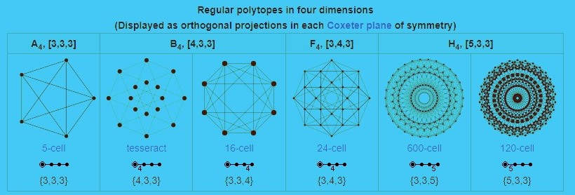

The geometry of four-dimensional space is much more complex than that of three-dimensional space, due to the extra degree of freedom.
Just as in three dimensions there are polyhedra made of two dimensional polygons, in four dimensions there are polychora made of polyhedra. In three dimensions, there are 5 regular polyhedra known as the Platonic solids. In four dimensions, there are 6 convex regular 4-polytopes, the analogs of the Platonic solids. Relaxing the conditions for regularity generates a further 58 convex uniform 4-polytopes, analogous to the 13 semi-regular Archimedean solids in three dimensions. Relaxing the conditions for convexity generates a further 10 nonconvex regular 4-polytopes.

In three dimensions, a circle may be extruded to form a cylinder. In four dimensions, there are several different cylinder-like objects. A sphere may be extruded to obtain a spherical cylinder (a cylinder with spherical "caps", known as a spherinder), and a cylinder may be extruded to obtain a cylindrical prism (a cubinder).[citation needed] The Cartesian product of two circles may be taken to obtain a duocylinder. All three can "roll" in four-dimensional space, each with its properties.
In three dimensions, curves can form knots but surfaces cannot (unless they are self-intersecting). In four dimensions, however, knots made using curves can be trivially untied by displacing them in the fourth direction—but 2D surfaces can form non-trivial, non-self-intersecting knots in 4D space.[13][page needed] Because these surfaces are two-dimensional, they can form much more complex knots than strings in 3D space can. The Klein bottle is an example of such a knotted surface.[citation needed] Another such surface is the real projective plane.[citation needed]
In cituation needed or page needed sections some text would be modified